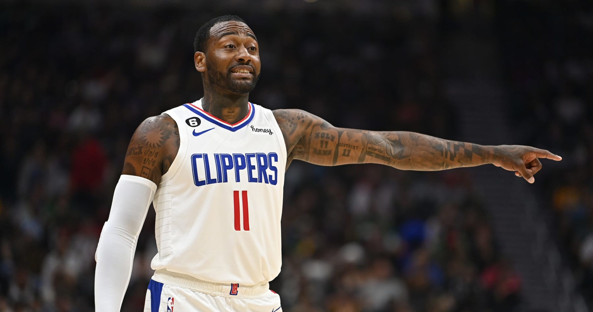

John Wall’s basketball exile ends with a genuine second chance
LOS ANGELES — Mere seconds after Los Angeles Lakers star LeBron James revved up the home crowd Thursday night with a transition dunk late in the third quarter, John Wall dragged Crypto.com Arena back into silence. Wall, who in his previous basketball life served as the Washington Wizards’ franchise player for nine seasons, plays a decidedly different role these days, coming off the bench for a Los Angeles Clippers team with championship aspirations. At 32 and with several major injuries in his past, the 2010 No. 1 overall pick no longer bears the burden of producing like a star or leading a playoff run. The Clippers have Kawhi Leonard and Paul George for that. But the ball found Wall after James’s thunderous slam, and he freed himself for a midrange jumper with a sharply executed crossover and behind-the-back combination. When his shot found the net, pushing the Clippers’ lead back to double digits, Wall pushed the palms of his hands toward the floor for emphasis. Everything was under control, and Lakers fans could return to their seats.
The Clippers held on for a 103-97 win in their season opener, beating their crosstown rivals for the eighth straight time. The victory was Wall’s first NBA action since April 23, 2021, an exile that lasted nearly 18 months in the aftermath of his 2020 trade from the Wizards to the Houston Rockets. “I was geeked,” Wall said when asked about appearing in his first game in 545 days. “I’m not going to lie. I was turned up, for sure. It felt great.”
In a sign of Wall’s new lot in life, his stellar return Thursday wasn’t even the Clippers’ most important comeback. Leonard, a two-time Finals MVP, played for the first time since tearing his ACL during the 2021 playoffs, scoring 14 points in 21 minutes off the bench as the Clippers eased him back into the lineup. Though the long-awaited revival of Wall’s career was relegated to subplot status, it was still entertaining, productive and emotional. The five-time all-star point guard finished with 15 points, four rebounds and three assists in 25 minutes with the second unit — the first time he wasn’t a part of his team’s starting lineup since January 2013. When the Lakers rallied in the fourth quarter, Clippers Coach Tyronn Lue turned to Wall, instead of starter Reggie Jackson, to close the game. Wall responded by drilling a key jumper to give the Clippers a six-point lead with just over three minutes remaining.
Thursday was a long time coming for Wall, who signed a four-year, $170 million contract extension with the Wizards in 2017, missed the entire 2019-20 season with an Achilles’ injury and was traded to the Rockets for Russell Westbrook in December 2020. In Houston, Wall initially expected to pair with James Harden on a playoff-bound team, but the organization entered a deep rebuilding effort when it traded a disgruntled Harden to the Brooklyn Nets in January 2021. While Wall averaged 20.6 points and 6.9 rebounds in 40 appearances in 2020-21, the Rockets sat him out for all of last season to create greater opportunities for their young backcourt of Kevin Porter Jr. and Jalen Green. With Wall on the books for $44 million last year and $47 million this year, Houston was unable to generate traction in trade scenarios, leaving Wall as a helpless bystander.